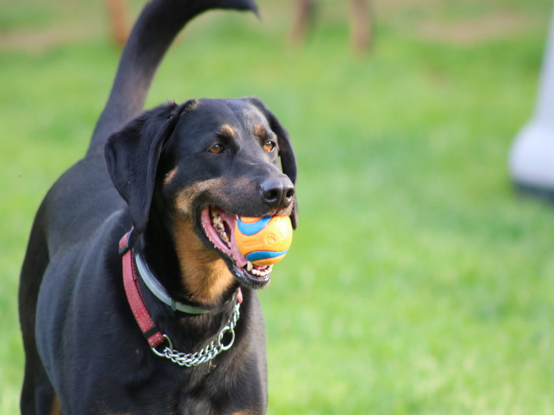
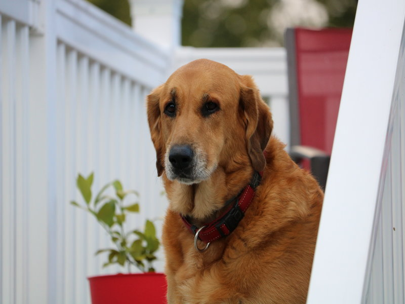
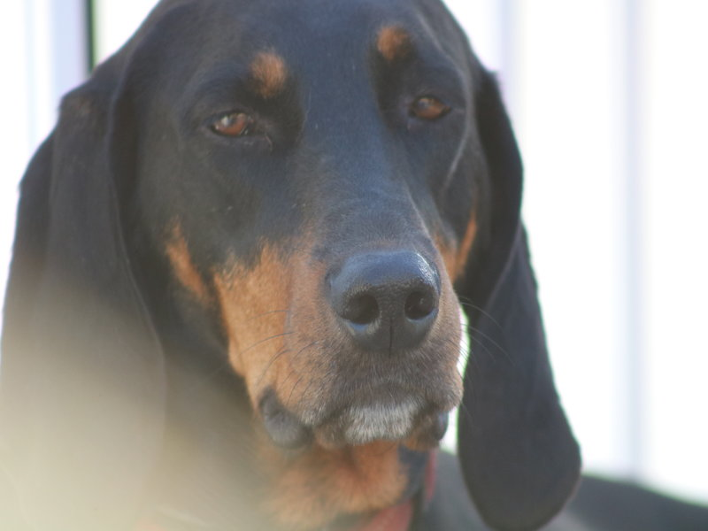
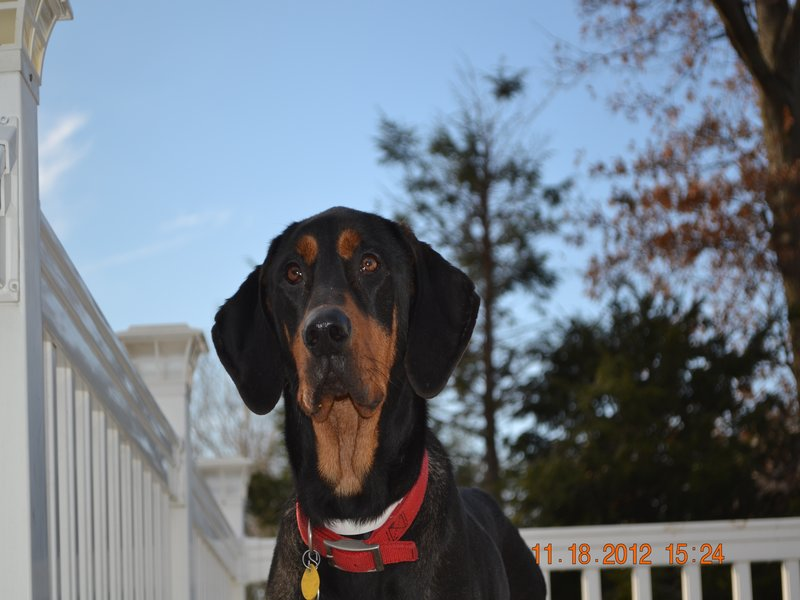
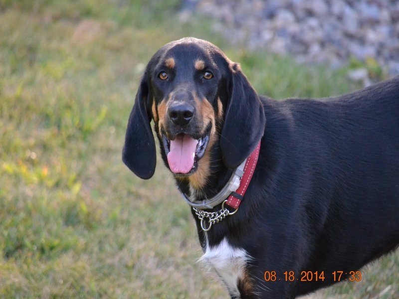
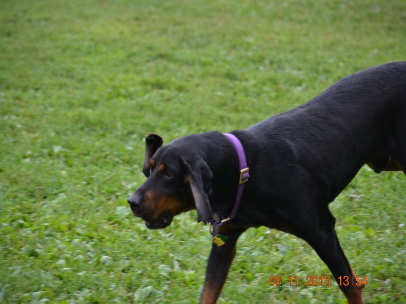

Our Rescued and Foster Dogs from American Black and Tan Coonhound Rescue
Dogs Name
Picture/Video
Picture/Video Info
Daisy

Daisy was are first rescue dog My wife and I addopted her in 2009 she was 8 weeks old.
Ariel

Ariel was are 2nd rescue dog. She is half Black And Tan and half golden retriver.My wife and I addopted her in 2010 she was 8 weeks old..
Penelope

Penelop was are first foster rescue dog My wife and I fostered her in 2011. After a week we said lets adopt her. Penelope and her sister and brother were abanded as puppies so we are not sure how old she was when we got her.When we took her to our vet to be checked out the vet thought she was about 6 months.
Howie

Howie was are 2nd foster. Howie is a big gofy loveable guy.His owners ran into hard times and had to surender him to a shelter in Georgia.The bad thing about shelters in Georgia is that they are kill shelters. His time was almost up when my wife and I said yes we will foster him. We got him in October of 2012 and he was adopted 2 months later.
RayRay

RayRay was undersized and had been abused. She was sweet but fearful around strangers. We started fostering her in October of 2013. With alot of love and hard work she put on 20 pounds and became much more trusting of people. She was adopted in Febuary of 2014,
Hank

Hank was are 4th foster and by far the hardest. Hank was loveable but you could not turn your back on him or he was over the fence and out running around in the neighborhood. He escaped 3 times in the 4 months we foster him. We got him in August of 2015 and he was adopted in November of 2015.